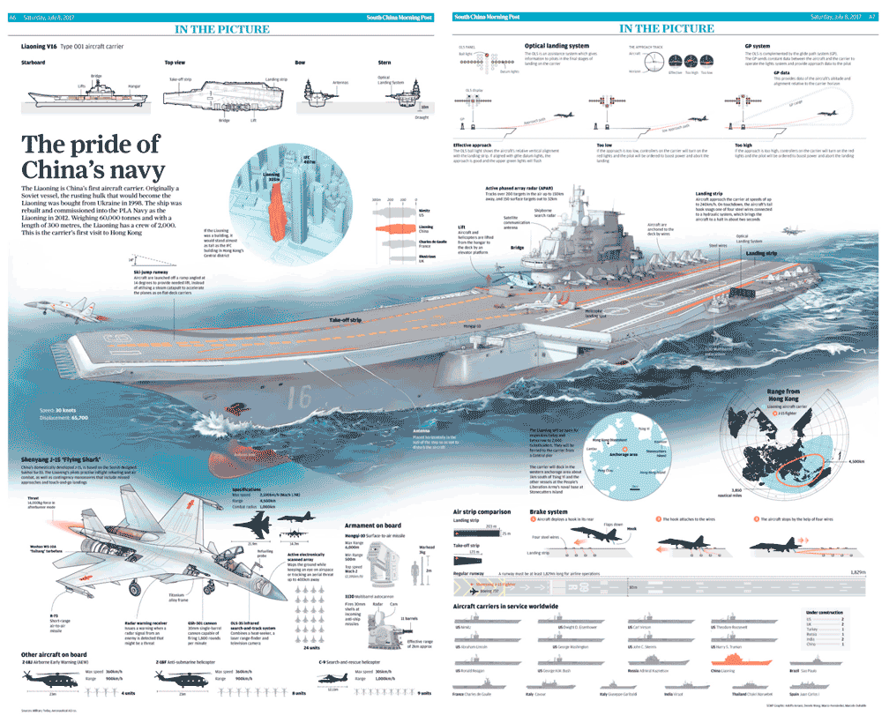
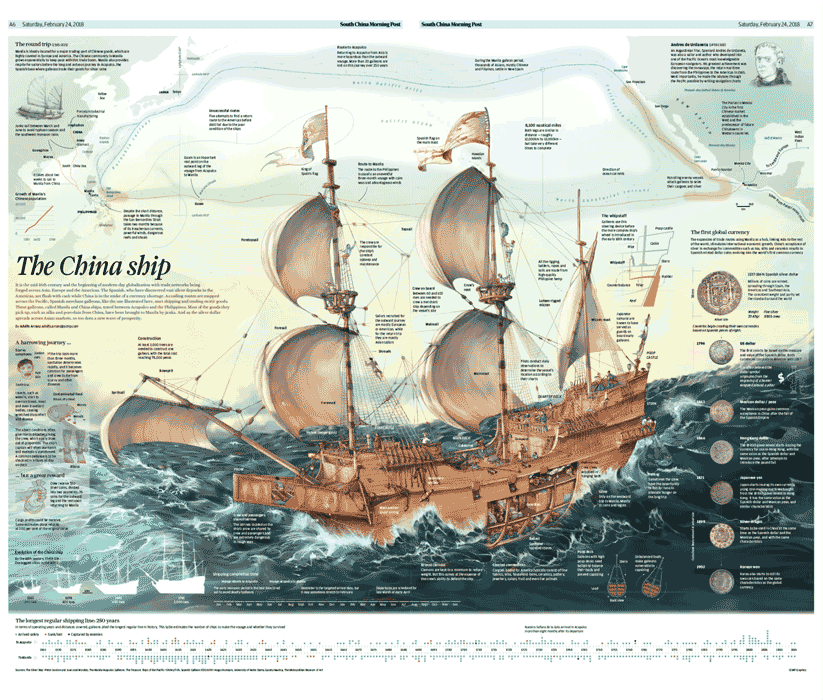
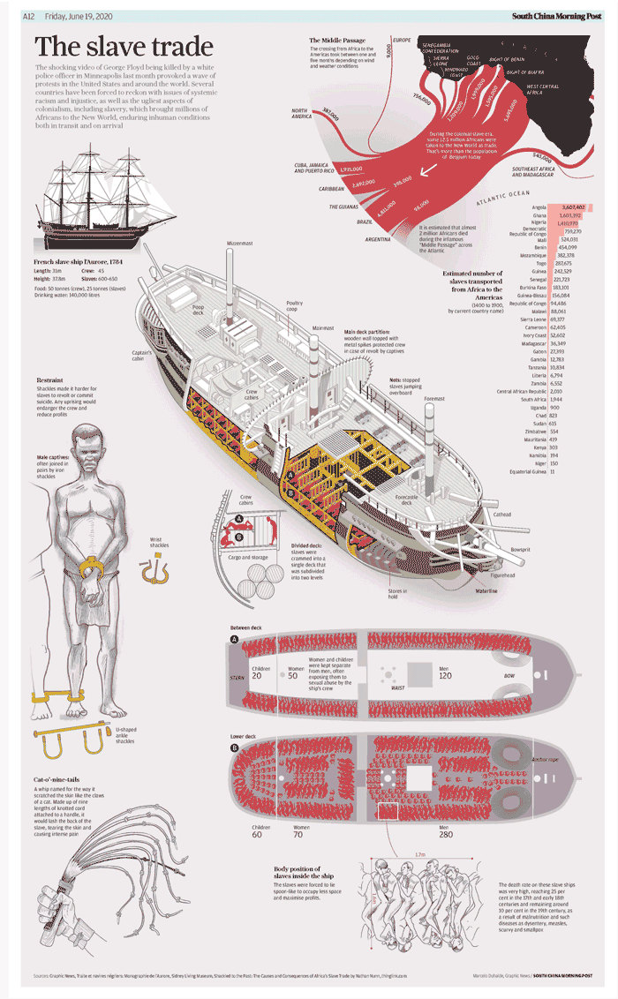
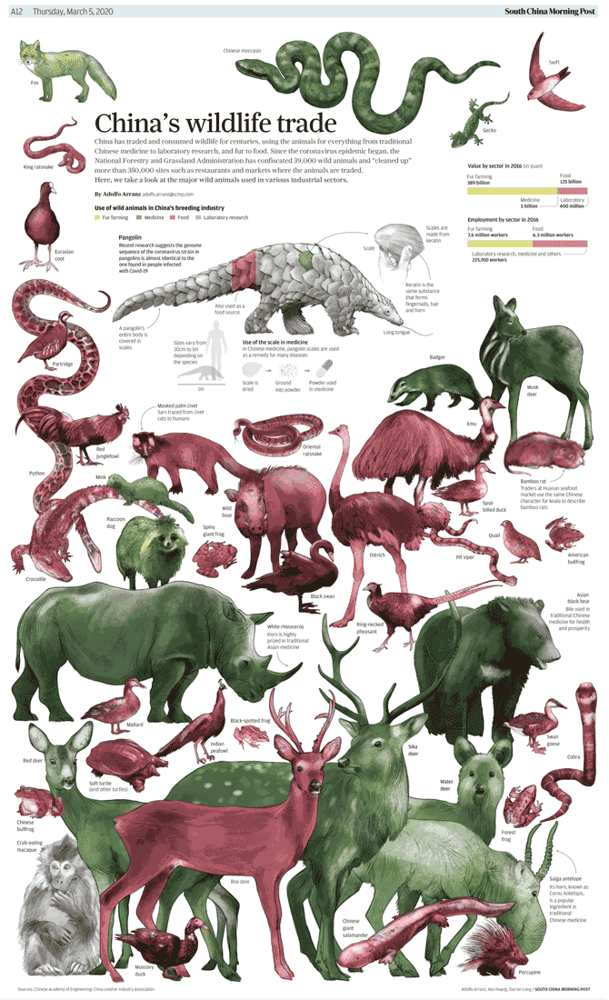
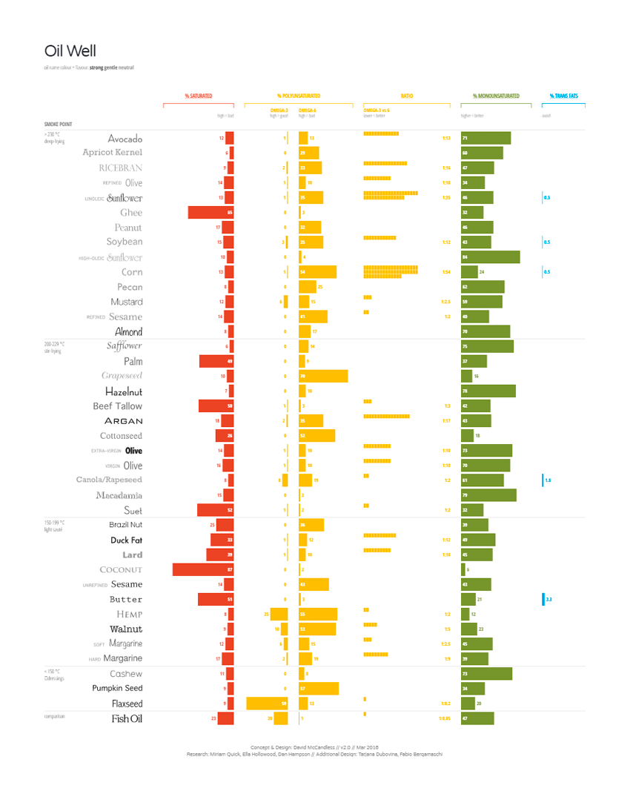
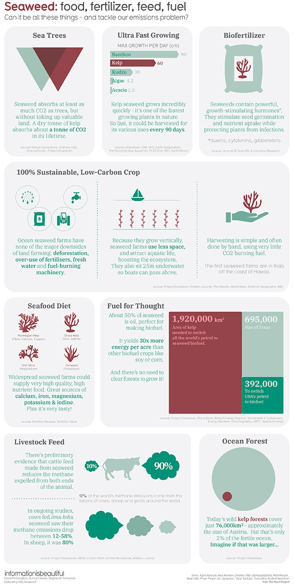
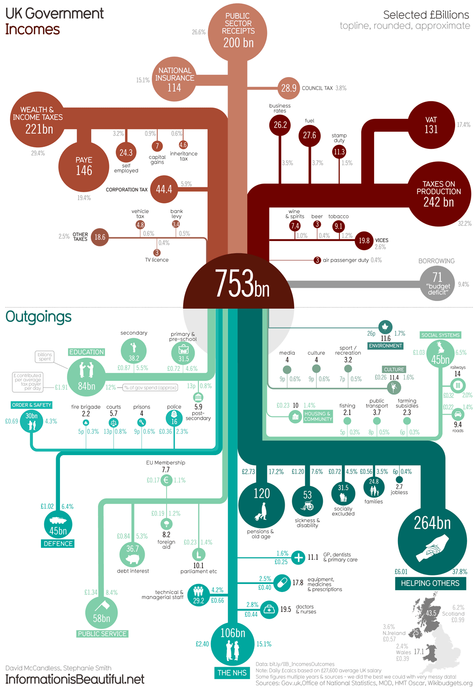
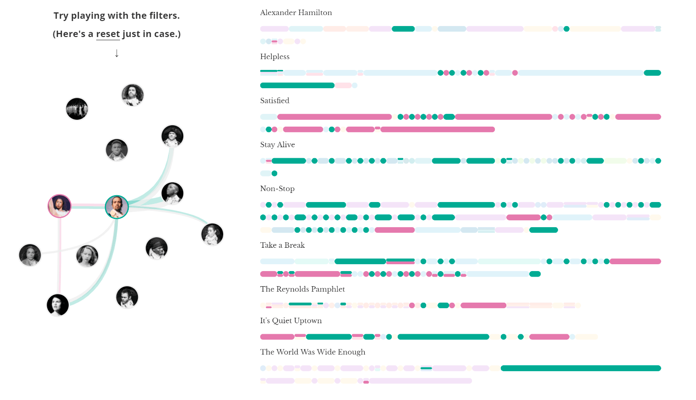

Información en gráficos figurativos

The pride of China's navy
Publicado en South China Morning Post.

The China ship
Publicado en South China Morning Post.

The slave trade
Publicado en South China Morning Post.

China's wildlife trade
Publicado en South China Morning Post.
Información en gráficos no figurativos

Oil Well
Publicado en Information is beautiful.

Seaweed: food, fertilizer, feed, fuel
Publicado en Information is beautiful.

UK Government Incomes
Publicado en Information is beautiful.

An Interactive Visualization of Every Line in Hamilton
Publicado en The Pudding.